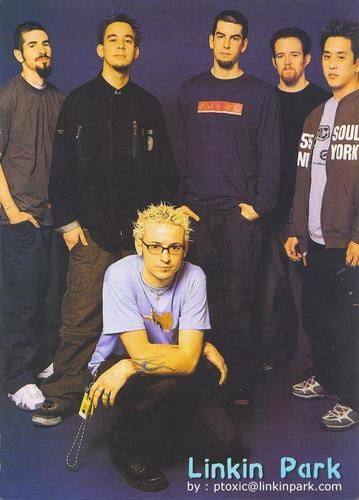
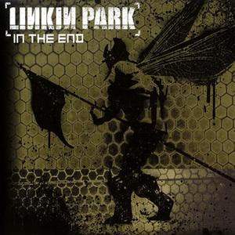
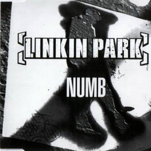
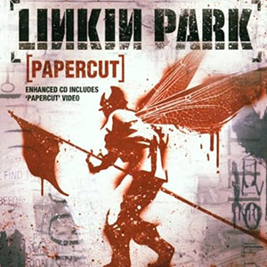
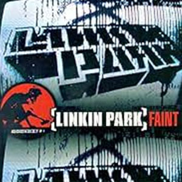

Chester Charles Bennington Johnson, llamado siempre Chester Bennington, fue un cantante, compositor y actor estadounidense, reconocido por ser el vocalista de bandas como Linkin Park y Dead By Sunrise Nació el 20 de marzo de 1976 en Phoenix, Arizona, y fue hijo de Lee Russell Bennington y Susan Elaine Johnson.
Cierto dia Chester recibe de parte de un amigo una maqueta creada por Joe Mike Brad & Rob quienes estaban en busca de cantante para completar la formacion de la banda. Luego de escuchar la maqueta, Chester se intereso en su estilo de musica y los llamo por telefono decidido a querer formar parte de la banda, durante la llamada le pidieron que cante una porcion de la maqueta, Chester accedió y los demas integrantes quedaron perplejos por su capacidad, era la voz adecuada al estilo que hacian y fue aceptado como vocalista. El 24 de octubre de 2000, Linkin Park lanzó su álbum debut, Hybrid Theory, a través de Warner Bros. Records. Bennington y Shinoda escribieron las letras de Hybrid Theory basadas en algunos materiales pasados. Shinoda señaló las letras como interpretaciones de sentimientos, emociones y experiencias universales, y como «emociones cotidianas de las que hablas y piensas». Bennington luego describió la experiencia de escribir canciones a la revista Rolling Stone a principios de 2002, diciendo que «es fácil caer en esa cosa: “pobre, pobre de mí”, de ahí vienen canciones como “Crawling”: no me puedo llevar a mí mismo. Pero esa canción se trata de asumir la responsabilidad de nuestras acciones. No digo “tú” en ningún momento. Se trata de cómo yo soy y la razón por la que me siento así. Hay algo dentro de mí que me deprime». Bennington se desempeñó como vocalista principal de Linkin Park, pero ocasionalmente compartió el papel con Shinoda. All Music Guide describió la voz de Bennington como «aguda» y «emocional», en contraste con el estilo de hip-hop de Shinoda. Ambos miembros también trabajaron juntos para escribir las demás letras de las canciones de la banda. En esta imagen Chester es quien esta agachadio en el frente
| Canciones más reconocidas | Cancion |
|---|---|
|  | |
|  | |
|  | |
|  |